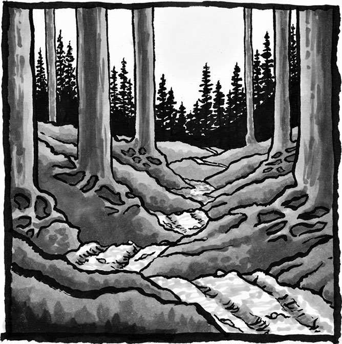
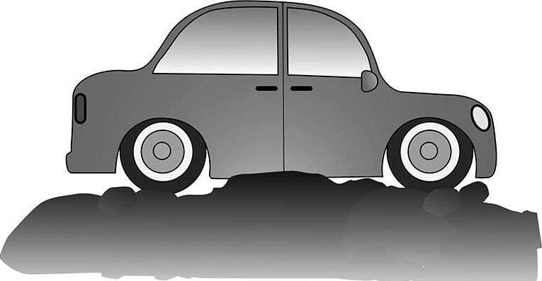
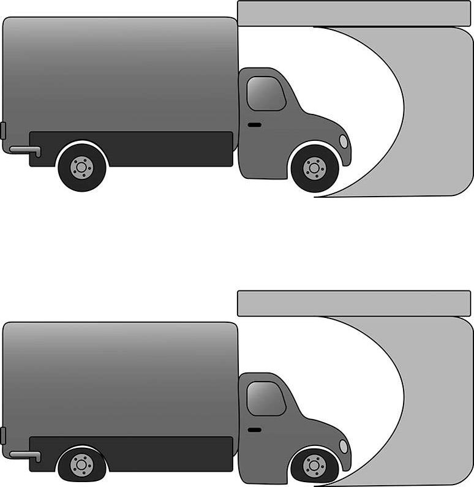
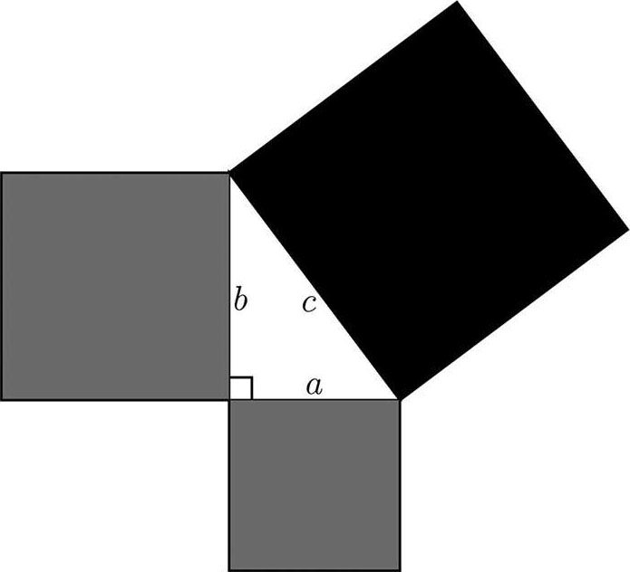
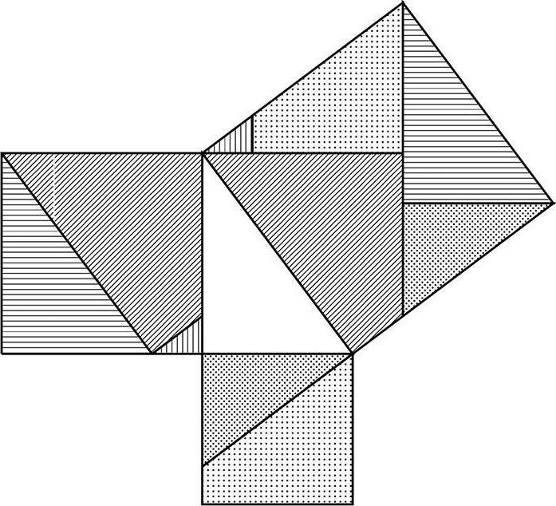

3 意义
在我看来，诗人只有去感知别人未曾感知的东西，才能比别人看得更加深刻。数学家亦如此。
——索菲娅·柯瓦列夫斯卡娅
（Sofia Kovalevskaya）1
每个词都是一个死去的隐喻。
——豪尔赫·路易斯·博尔赫斯
（Jorge Luis Borges）2
我的父亲出生于中国某个偏远的乡镇。母亲去世后，父亲带着我们一家人飞回了中国，想让我们看看这片故土，看看母亲即将长眠的地方。可自从父亲在机场租车开始，我就感觉整个行程不太靠谱，因为包括司机在内一行六人，还有一大堆行李，想都塞进这辆破破烂烂、饱经风霜的小汽车实在太过勉强。随着汽车的前行，我对这趟远行越来越怀疑——整整四个小时的颠簸旅程，除了坑坑洼洼、崎岖不平的土路和路旁零零散散的几只山羊，我们什么也没见到。这条捷径真能通向目的地吗？难道就没有平整的公路可走吗？

就在我满腹疑问的时候，我们遇到了一段极其颠簸的道路，汽车撞到了一块巨大的凸起，虽然前轮成功碾了过去，但车身却卡在了这块凸起之上，动弹不得。我们只能眼睁睁地看着前后轮一起在湿软的泥土上空转。总而言之，我们被困在这里了。1

情况很不妙。方圆几英里之内荒无人烟，我们被困在这条人迹罕至的小道上，束手无策，孤立无援。天色正在逐渐变暗，太阳很快就要落山，如果仅靠双腿，我们在天黑之前根本走不了多远。
乍一看，摆在我们面前的尴尬处境似乎跟数学毫不沾边——毕竟不涉及任何数字，也不涉及任何符号或公式——可冥冥之中我有一种预感，觉得自己在数学方面的经验能够帮助我们摆脱困境。一番思索之后，我想起我之前在某本书里见到过类似的题目——那本书的作者是马丁·加德纳（Martin Gardner），一位数学科普作家。题目是这样的：一辆卡车被困在了立交桥下，由于后方交通堵塞，它无法倒车退回；由于车身过高，它也无法继续前进。怎么办？我还记得问题的答案：对卡车轮胎缓缓放气，直到卡车的高度低到足以从天桥下顺利通过（参考下图）。
题目中的情景和我们的实际情况有些相似，但细节上又有些不同——我们不是卡在了立交桥下，而是卡在了凸起之上。或许我们可以给轮胎打气，让它膨胀起来……遗憾的是，我们并没有打气筒。到底该怎么办呢？

当你展开头脑风暴试图想出一些行之有效的策略来解决问题时，你会遇到这样一个阶段，在这个阶段你必须弄清问题的真正含义，同时你还要剔除那些无关紧要的细节以便将问题归类，然后在脑海中思索这个问题和你之前解决过的那些问题有何关联。这个过程其实就是在剖析问题，找出问题的本质。
没错，想要抓住问题的本质，弄清它的意义或含义，你就必须找到这个问题和其他事物的关联。比如每当你思考生命的意义，你实际上就是在思考自己在宇宙中所扮演的角色。每当你想要弄清奇异事件的意义，你实际上并没有把它当作一个孤立事件，而是将它和其他事件放到一起，思考它的前因后果。再比如你想在字典里查找某个单词的含义，你会发现这个词必须放到句子中才能做出具体解释。
当作家豪尔赫·路易斯·博尔赫斯援引诗人莱奥波尔多·卢贡内斯（Leopoldo Lugones）的话“每个词都是一个死去的隐喻”时，他其实是想告诉大家，每个单词的具体含义都和当时的历史背景相关。换句话说，单词的含义取决于具体语境。比如“calculus”曾用来指代“小石子”，就像你在算盘上看到的用来计数的那种珠子，如今这个词的意思已经变成了“微积分”，用来指代一种比珠算复杂得多的运算过程。再比如“geometry”曾经的含义是“土地测量”，而如今其含义变成了“几何”，用来指代一种几乎和所有度量行为都能产生关联的数学分析方法。由此可见，单词并非孤立存在，每个词语和它的具体含义都起源于一个古老的语境，伴随着时代的发展不断演变至今。
同样，数学概念也是一种隐喻。我们以数字 7 为例。想要跟大家分享和数字 7 相关的趣味知识，你在聊天的时候就得把它和其他事物放在一起。我们说数字 7 是素数，实际上是在谈论它和因数（那些能整除它的数字）之间的关系。我们说数字 7 在二进制中可以写作111，实际上是在探讨它和数字 2 之间的联系。我们说数字 7 是一周的天数，实际上是在告诉大家它和日历之间也能产生有趣的“化学反应”。因此，数字 7 既是一个抽象的概念，也是几种具体的隐喻：一个素数，一个二进制数，一周的天数。同理，勾股定理也不仅仅是关于直角三角形三边关系的陈述，从隐喻的角度来看，它同时也是你新学到的每一个能够阐释勾股定理为什么正确的证明、你新发现的每一个能够展现勾股定理实用性的应用。因此，每当你遇到新的证明方法，看到新的应用方式，勾股定理对于你的意义都会随之加深。每个数学概念都伴随着多个隐喻，正是这些隐喻塑造了数学概念对于人们的意义。没有任何概念能够独立存在，因为独立会使其消亡。
这就是为什么数学能够像诗歌一样令人心驰神往。你对某个词语的使用频率越高，它在你心目中的含义就越丰富——你会逐渐认识到词与词之间的细微差别，发现它们所蕴含的不同意象——所以事实上根本不存在严格意义上的同义词。诗人在推敲出意境精准的诗句时，那一瞬间的快乐简直难以言表。数学思想也是同样的道理，你钻研得越深，你对数学思想的理解就越透彻。每一次获得新的理解，你都能看到一个不同的视角。最终，当你悟出了数学思想的真谛时，你会体验到那种醍醐灌顶的快感。
意义是人类最本能的一种渴求。那些美妙诗句之所以令我们如痴如醉，是因为我们读出了诗句背后的深刻含义。我们这一生，不是在追求有意义的生命，就是在寻找有意义的工作。我们渴望和他人进行有意义的交流。想要无憾地度过此生，我们就不得不去追寻各种意义。既然如此，我们又有什么理由在数学之路上浅尝辄止呢？
著名数学家亨利·庞加莱（Henri Poincaré）说过：
科学由事实构成，正如房屋由砖块构成；但是，事实的随意叠加称不上真正的科学，正如石头的简单堆砌算不上真正的房子。2
杂七杂八地学了一堆数学知识，本质上就是随意堆起了一堆砖块。想要建起一座像样的房子，你就得想办法让砖块井然有序地组合起来。这就是死记乘法口诀显得枯燥乏味的原因：其实就是在机械地堆砖块。不过，倘若你能够调动起好奇心去寻找口诀中的规律，归纳其中的原理，那么恭喜你，你已经开始试着建造房屋了。通常来说，“房屋建造者”在数学上表现得更为出色。有数据表明，数学成绩较差的学生对数学知识的掌握只停留在记忆层面；而那些数学成绩较好的学生则会更进一步，将零碎的数学知识视为一个互相关联的整体。3
对意义的不断追求，可以帮助人们培养某些相当重要的优秀品格。
首先，它可以培养我们构建故事的能力。几千年来，人们一直都在以故事为载体来记述历史、传承真理。故事可以将彼此毫不相干的事件串联起来，在听众和故事之间，以及听众和听众之间建立起一种微妙的联系。数学也一样，想要寻求数学的意义，将各种数学概念串联起来是一个不可或缺的过程，能做到这一点的人会自然而然地变成故事的构建者、传播者。
一上来就抛出一个空泛的数学概念，然后不告诉我具体意义和内含，直接让我拿它去做题——我的数学学习生涯中出现过太多次这样的事了。每次我都会和这些数学概念陷入苦战，因为书上的定义对我来说毫无意义——我想不通这个概念和其他数学知识之间到底有什么关联。然而通常情况下，仅仅几句话的点拨就能帮助我抓住问题的核心，这样的例子比比皆是。比如在学习微积分时，如果有人能够总结出“分部积分法是乘积法则的逆运算”，那么“分部积分法”和“乘积法则”这两个概念瞬间就全都变得清晰易懂了。我曾在统计学中见到过这样一个说法：“学习统计学，实际上就是在学习如何成为一名优秀的数字侦探。”我还知道一个适用于所有数学领域的真理：“对象之间的函数关系比对象本身更重要。”这句箴言和我对数学意义的理解可以说是不谋而合：抛开对象之间的关系，孤立地看待某个对象本身，其实没有什么意义。而函数就意味着某种关系。函数可以被视为一个“故事”。
构建故事的方法多种多样，我们不妨仍以勾股定理为例。根据勾股定理，直角三角形三条边的边长a、b、c满足以下关系：
a2+ b2= c2
其中c是斜边（最长的那条边）的边长。这是一个不涉及具体语境的公式，很容易被大家忘记，除非我们构建一个故事去记住它。
我们可以构建一个讲述几何关系的故事：利用直角三角形的三条边画出三个正方形，你会发现勾股定理实际上意味着：两个小正方形的面积之和等于大正方形的面积（见下图）。

我们也可以构建一个故事来阐释这条定理的重要意义：“勾股定理是整个三角学的基础，也是几何学中尤为关键的一个定理。”我们还可以构建一个以史实为基础的故事，把勾股定理放到历史背景当中：“毕达哥拉斯学派对该定理的证明，比欧几里得对该定理的证明早了好几个世纪。”
数学探索者们更喜欢解释性的故事。换句话说，他们更喜欢定理的证明过程。下图完美诠释了什么叫作“无字证明”——巧妙地把正方形分割成几个不同区域，就能说明勾股定理的正确性。仔细观察下图中两两对应的区域我们就会发现，大正方形的面积刚好等于两个小正方形的面积之和。（这种分割方法适用于任意一个直角三角形，具体原理值得你认真思考一番。）

说出来你可能不信，其实勾股定理还可以构建一个物理故事。如果把一个速度的矢量形式分解成水平方向和垂直方向的两个分量，你就会得到一个矢量形式的直角三角形。另一方面，矢量线段的长短代表速度的大小，而动能刚好与速度大小的平方成正比。根据勾股定理，将物体沿斜线推出所需要的能量，等于将物体沿水平方向推出所需要的能量与将物体沿竖直方向推出所需要的能量之和。
你还可以通过游戏、探究式学习、制作实物模型等方式来构建一个互动性的故事。比如你可以亲自体验一下木匠用木棍创造直角的小技巧：考虑到 32+ 42= 52，你可以先把两根木棍的端点拼在一起，随便摆出一个角度，然后以这两个相互重叠的端点为原点，在某根木棍3 个单位长度的地方做一个标记，在另一根木棍 4 个单位长度的地方做另一个标记，然后耐心调整角度，使得两个标记之间的距离刚好为 5个单位长度。然后你就会发现，此时的角度恰好就是一个直角。
以上每一个故事都能加深你对勾股定理的理解，帮助你掌握该定理更深层次的意义。构建故事是记忆新知识的重要手段。如果能把各种知识合理地融入故事中，记住它们就不再是一件令人头疼的事了。
代数工程（Algebra Project）是一项针对美国经济欠发达地区的数学能力培育计划，也是一个利用故事的构建来增强学习体验的典型案例。该项目由麦克阿瑟奖得主、民权活动家罗伯特·帕里斯·摩西（Robert P. Moses）创立，旨在为教师群体提供课程和培训，每年能够惠及 10000 余名学生。这些课程采用了体验式学习方法，通过以下五个步骤帮助学生们将体验和抽象结合起来：
（1）身体力行：比如组织远游、观测等活动。
（2）画下眼中所见/建立相关模型：要求学生以所见所闻为基础，画出自己的体验，建立相应的模型。
（3）直观总结/积极交流：要求学生将所见所闻构建成完整的故事，然后彼此交流分享。
（4）提炼概念/归纳精华：要求学生提炼出所见所闻的核心内容，然后利用数学知识加以分析归纳。
（5）掌握数学语言：要求学生将自己的想法用数学语言转化为数学模型。
可以看出，每个步骤实际上都是在要求学生构建一个故事。4
对意义的不断追求，还可以锻炼我们的抽象思维能力。人们总觉得抽象思维脱离实际，其实恰恰相反，抽象思维能够让事物的实际意义变得更丰富。当你发现两个事物具有相似的结构脉络或行为模式时，这种相似就建立了一种联系，你就发现了一种前所未有的实际意义。庞加莱有句名言：“所谓数学，本质上就是给不同事物起同一个名字。”（对此，某位诗人也给出了一个有趣的回应：“所谓诗词，本质上就是给同一事物起上好几个不同的名字。”）5如果你这辈子只见过一条狗，而且它恰好是一条德国牧羊犬，那么你可能会觉得，“狗”这个概念等同于德国牧羊犬。只有不断见到更多的狗，你才会明白，“狗”的含义可不仅仅是你之前认为的那样狭窄。之所以说抽象思维能够丰富实际意义，是因为抽象思维可以帮你建立样本库，提炼出事物的本质，比如认识狗。如此一来，你就能看到不同事物之间的共通之处。[书ji分 享V 信shufoufou]
学习代数有很多好处，其中相当关键的一点就是它能帮助我们看到问题较为抽象的一面。在学习代数的过程中，我们很容易舍本逐末，过于重视运算技巧的练习，比如代数式形变、因式分解，以至你可能无法停下来去欣赏蕴含在代数之中的那股强大力量：它能将我们塑造成思维灵活的人，帮助我们认清事物之间的规律和联系，根据缜密的推理找到解决某一类问题的“万能钥匙”。利用代数，我们给出了计算复利、卡路里的消耗、掷硬币的概率的通用公式，这些公式不仅能解决眼前的问题，也能解决情形不同但类型相同的其他问题。从狭义的角度来看，二次方程求根公式只能用来求解二次方程，但如果把视野放宽，我们就会发现其实很多问题最终都能简化为对二次方程求解。抽象思维可以让我们的思考方式更灵活，无论对何种职业来说这都是一项必不可少的技能。既然现在我们可以针对多种不同情况总结出一个通用公式，那么将来我们就可以把这种能力应用到更广的范围中，比如写出一段可以轻松处理任意大小的输入值的计算机程序，或者建造一座能够容纳各行各业人士的摩天大楼。
抽象思维能力带给我们的巨大收益不仅体现在职业生涯中，还体现在生活的各个方面。分析问题时，我们不是经常需要剥离无关细节、直指问题核心吗？看待问题时，我们不是经常需要站在不同角度、全面认知事物吗？学好数学，不是会让我们在这些方面更加得心应手吗？答案不言自明。因此，我当初看到卡车被困在立交桥下那个问题时，并没有在那些无关紧要的细节上浪费时间，比如我根本不关心它是卡车还是小汽车，也不关心车到底有多重。我剥离了细节，尝试从不同角度思考问题，以便找出问题的核心。这样做的好处是，之后再遇到其他问题时，比如一辆小轿车的车身卡在了地面的凸起之上，我能凭借之前的经验去辨别这个新问题和我解决过的旧问题有何相似之处。
对意义的不懈追求可以顺带培养我们坚韧不拔、沉着思考的品格。只有不断思考，才能辨明某个思想的真正意义。抱着一道数学题冥思苦想，伏案疾书，是处理问题时极为常见的一个画面，同时也是极为艰难的一个考验。习惯这一点以后，你就能在脑海中将不同事物联系起来，以构建故事的形式对各种规律模式进行归纳总结。威廉·拜尔斯（William Byers）在《数学家如何思考》（How Mathematicians Think）一书中给出了大量经典实例，可以很好地说明为什么那些我们早就学过的、已经成为显而易见的“小儿科”的思想概念，一旦被人们从追寻意义的角度去重新审视，就会格外地发人深省。6我们以方程式“x + 3 = 5”为例，左侧是一个数学过程（即加法），而右边却是一个数字。为什么我们会认为过程等于数字？同理，在你获得最终解之前，变量x可以是任意的数字，可一旦你算出了最终解，那x就变成了唯一的数字： x = 2。那么问题来了： x到底是任意数字还是唯一数字？解决这些概念上的歧义，是理解此表达式真正含义的关键所在，而这一过程需要你静下心来认真思考。问题解决之后，你会获得一种发自内心的愉悦，这种愉悦感会在你追寻意义的过程中不断累积叠加，最终帮助你养成坚韧不拔的品格——对新的问题怀有信心，对新的战果抱有期待。
由此可见，数学学习过程中的核心内容就是不断追寻各种意义。如果你连自己竭尽全力的意义在哪里都搞不清，那你根本不可能在数学之路上有所收获，活出精彩的人生更是无从谈起。我喜欢下面这个关于数学的定义：
所谓数学，就是研究各种规律的科学。7
不过，我想根据自己的理解对该定义做一个补充，因为“科学”这个词听上去给人一种奇怪的感觉，好像我们学习数学只是为了获取更多的新发现。事实上，数学的意义远不止那些实际效用。不断探索同一个思想概念在不同视角之下的不同意义，才是真正的数学之美。因此，我更倾向于将数学定义为：
所谓数学，就是研究各种规律的科学，
同时也是一种不断探寻各种规律的意义所在的艺术形式。
说了这么多，别忘了我们的车还卡在凸起之上呢。
尽管其他人已经做好了在车上过夜的准备，可我仍旧没有放弃，我还在努力思索可行的对策，因为我对数学的不懈追求不允许我放弃，以往追寻各种意义的经历进一步加强了我的这种信念。
凭借多年构建数学故事的经验，我直觉上认为我们眼下的窘境和卡车被困在立交桥下的难题，实际上是同一类问题。
我在数学抽象思维方面的锻炼，帮我剔除了无关信息，找到了问题核心所在：看上去好像是要解决汽车和凸起之间的矛盾，但稍加思索就会发现，实际上要解决的是汽车和轮胎之间的矛盾。我们的目的是抬高车身，之前本来想向轮胎里打气，可惜没有打气筒。既然如此，我还有没有别的办法去解决汽车和轮胎之间的矛盾呢？
想到这里，我茅塞顿开。全员下车不就好了吗？
就在我们五名乘客拖着行李（一共 700 磅[1]）下车之后，汽车的驾驶位很快就高过了地面的凸起，我们终于能够继续前进了。所有人都长出了一口气。
------红黑纸牌戏法------
这个戏法虽然相当简单，但还是能令观众感到惊讶：首先，你递给某位观众一摞纸牌，让她在洗牌之后将牌面朝下递还给你。你拿回牌之后将牌组切分成两份（切牌的时候可以加一点节目效果，千万注意牌面一定要朝下），然后跟她说，第一份牌组里红牌的数目刚好等于第二份牌组里黑牌的数目。最后让她将两份牌组翻过来检查。
下面是这个戏法的准备工作：道具用一副标准的扑克牌就行，不过为了缩短节目时长，你最好还是将牌的数量控制在 20 张左右，重点在于黑牌和红牌的数目必须一致。当观众把洗好的牌递还给你时，你只需要将牌组平均分成两份（注意均分的动作不要太明显），戏法就成功了。你能想明白其中的原理吗？
这个戏法和下面的谜题全部来自拉维·瓦基勒（Ravi Vakil）的奇书《数学万花筒》（A Mathematical Mosaic）。你能看出它们之间的联系吗？
------水与酒------
取两个大小一样的玻璃杯，向其中一杯倒入半杯容量的水，称其为水杯；向另一杯倒入半杯容量的酒，称其为酒杯。然后从酒杯里舀一勺酒倒入水杯，让水和酒混合在一起，不用在意混合程度是否均匀。最后，我们从这杯水酒混合液中舀一勺液体倒入刚才的酒杯中。
现在，到底是水杯中的酒多，还是酒杯中的水多？
弗朗西斯先生，您好：
您在信中多次用“一种在规律之中寻找意义的艺术形式”“数学的艺术本质”“规律所蕴含的意义是意义的本源，它让各种符号有了具体含义”“看待事物有多种角度”这类富有诗意的表述方式去描述数学、剖析数学，我对此深以为然，我自己也想像您说的那样去描述数学、认知数学。这些表达方式和我的亲身经历产生了共鸣，因为我有时也会隐隐约约地看到隐藏在数学之中的那种诗意。有位英国数学家曾这样夸赞傅里叶：“傅里叶之于数学，就像韵律之于诗歌。”这也是我的奋斗目标之一，我想用自己的实际行动去感悟、认知、描绘数学中的诗意。当然，除了数学，我还要把这份诗意、这种感知方式延展到生活的方方面面。我感觉我确实读懂了您想表达的意思。这就好比国际象棋的创造过程：我们设计了各种符号（象棋棋子），然后赋予它们具体意义（象棋规则），最后在棋盘这方天地之上感悟国际象棋之间错综复杂的关系和扑朔迷离的局势。非欧几何的建立过程也是这样，在符号和意义的演变下，非欧几何形成了一方与众不同的数学天地。
克里斯
2018 年 8 月 9 日
[1] 1 磅≈ 0.45 千克。——编者注